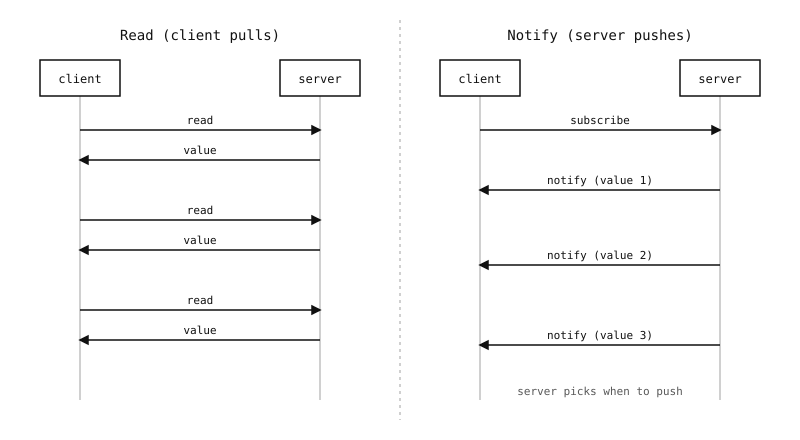

11.7. GATT-operaatiot¶
Karakteristikka istuu GATT-tietokannassa pelkkänä nimettynä arvona. Sen tekee hyödylliseksi pieni, hyvin määritelty joukko operaatioita, joita asiakas voi suorittaa siihen. Jokainen karakteristikka ilmoittaa, mitä operaatioita se tukee, ominaisuusbittimaskina – palvelin, jolla ei ole mitään paljastettavaa, voi julkaista vain luettavan arvon, ohjausrekisteri voi olla vain kirjoitettava, ja päivityksiä virtaava sensori asettaisi notify-bitin. Asiakas löytää bittimaskin etsinnän aikana ja noudattaa sitä.
Viisi operaatiota ovat read, write, write without response, notify ja indicate. Ne jakautuvat kahteen ryhmään – nouto (asiakas pyytää) ja työntö (palvelin lähettää).
11.7.1. Nouto: read ja write¶
Nämä kaksi ovat yksinkertaisimmat ja näyttävät täsmälleen funktiokutsuilta.
Read. Asiakas pyytää nykyistä arvoa, ja palvelin lähettää sen takaisin. Yksi edestakainen kierros, asiakas saa ne tavut, jotka palvelin on asettanut kyseiselle karakteristikalle, eikä palvelin saa tietoa siitä, kuka luki.
Write. Asiakas lähettää uudet tavut, ja palvelin tallentaa ne (ja suorittaa valinnaisesti sovelluslogiikkaa uudelle arvolle). Kahta muotoa on olemassa:
Write with response – palvelin kuittaa ja nostaa mahdollisen sovellusvirheen, jos tila on nollasta poikkeava. Luotettava, yksi edestakainen kierros.
Write without response – palvelin tallentaa tavut hiljaisesti; asiakas ei saa lainkaan kuittausta. Nopeampi (ei kuittausta odottavaa edestakaista kierrosta) ja hyödyllinen virtauttamiseen, sillä kustannuksella että virheistä saa tiedon vain sivukanavalukemalla.
Moduulissa aioble asiakaspuolen rajapinta kätkee valinnan yksittäisen aioble.ClientCharacteristic.write() -metodin taakse response-avainsanalla (True / False / None valitsee automaattisesti sen perusteella, mitä vastapuoli mainostaa).
11.7.2. Työntö: notify ja indicate¶
Noutomalli on väärä sensoridatalle. Sykepanta, jota puhelimen olisi pollattava joka sekunti, kuluttaisi akkua sadassa tarpeettomassa radiotapahtumassa; sellainen, joka työntää arvon vain silloin kun sillä on uusi lukema, on BLE:n koko pointti.
GATT ratkaisee tämän palvelimen käynnistämillä operaatioilla. Asiakas tilaa karakteristikan; siitä eteenpäin joka kerta kun palvelin päivittää arvon, uusi arvo työnnetään linkin yli asiakkaalle. Kaksi muotoa:
Notify. Lähetä ja unohda. Palvelin asettaa ilmoituksen jonoon, linkkikerros lähettää sen seuraavan yhteystapahtuman aikana, ja asiakas vastaanottaa sen. GATT-tasolla ei ole kuittausta; linkkikerroksen normaali uudelleenlähetys hoitaa hävikin radiopuolella, mutta sovellus ei näe vahvistusta siitä, että arvo käsiteltiin.
Indicate. Palvelin lähettää ilmoituksen ja odottaa asiakkaan GATT-tason vahvistusta ennen seuraavan lähettämistä. Yksi indikaatio kerrallaan. Käytetään, kun palvelimen on tiedettävä, että asiakas todella näki arvon – kriittisen hälytyksen karakteristikka, kokoonpanon kuittaus.

Nouto (read) vastaan työntö (notify). Ilmoituksilla asiakas tilaa kerran ja palvelin työntää uudet arvot aina kun ne muuttuvat.¶
Tilaaminen tapahtuu kirjoittamalla karakteristikkaan liitettyyn kuvaajaan – Client Characteristic Configuration Descriptor (CCCD, 0x2902). Arvon 0x0001 kirjoittaminen ottaa käyttöön ilmoitukset, 0x0002 ottaa käyttöön indikaatiot ja 0x0000 poistaa molemmat käytöstä. Metodi aioble.ClientCharacteristic.subscribe() suorittaa kirjoituksen puolestasi avainsanalipuilla notify=True ja indicate=True.
Tilauksen jälkeen asiakas odottaa saapuvia työntöjä metodeilla notified() ja indicated() – molemmat ovat asynkronisia korutiineja, jotka pysähtyvät kunnes seuraava työntö saapuu.
11.7.3. MTU määrää hyötykuorman koon¶
Jokaista operaatiota rajoittaa neuvoteltu MTU, johon yhteys päätyi yhteyden muodostuksen yhteydessä. Oletus-MTU on 23 tavua, mikä jättää 20 tavua karakteristikan arvotavuille GATT-otsikon jälkeen. Mikä tahansa tätä suurempi joutuu joko mahtumaan suurempaan MTU:hun (neuvoteltu ylöspäin metodilla aioble.DeviceConnection.exchange_mtu(), jopa 512 tavuun kameralla) tai se on jaettava useaan karakteristikkaan tai useaan ilmoitukseen.
Asiakkaan käynnistämät MTU:ta suurempien arvojen luvut ja kirjoitukset hoidetaan GATT:n pitkillä menettelyillä kulissien takana (Read Long / Prepare-Write + Execute-Write); aioble suorittaa nämä läpinäkyvästi, joten metodien read() / write() kutsuminen ylisuurella arvolla maksaa vain enemmän edestakaisia kierroksia. Palvelimen käynnistämiä ilmoituksia ja indikaatioita ei pilkota – yhtä työntöä rajoittaa MTU, ja sovellus jakaa kaiken suuremman useaan ilmoitukseen tai luopuu GATT:sta kokonaan.
Aidosti suurille siirroille – tallennetulle kehykselle, mittauserälle, laiteohjelmiston blobille – oikea vastaus on yleensä luopua GATT:sta kokonaan ja käyttää sen sijaan L2CAP-kanavaa (katso L2CAP-kanavat).
11.7.4. Kaksi puolta yhdellä silmäyksellä¶
Viisi operaatiota näkyvät eri tavoin yhteyden kummallakin puolella:
Palvelimella (oheislaite yleisessä asettelussa):
aioble.Characteristic.read()– lue nykyinen paikallinen arvo GATT-tietokannasta (palvelinpuolen ”mitä asiakas näkisi”).aioble.Characteristic.write()– päivitä paikallinen arvo ja työnnä päivitys valinnaisesti jokaiselle tilanneelle asiakkaalle.aioble.Characteristic.notify()/indicate()– lähetä työntö yhdelle tietylle asiakkaalle.aioble.Characteristic.written()– odota seuraavaa saapuvaa kirjoitusta miltä tahansa asiakkaalta.aioble.Characteristic.on_read()– takaisinkutsu, joka kutsutaan synkronisesti kun asiakas lukee, hyödyllinen arvon laskemiseen pyynnöstä.
Asiakkaalla (keskuslaite yleisessä asettelussa):
aioble.ClientCharacteristic.read()– pyydä palvelimelta nykyistä arvoa.aioble.ClientCharacteristic.write()– lähetä uusi arvo, kuittauksen kanssa tai ilman.aioble.ClientCharacteristic.subscribe()– ota käyttöön / poista käytöstä ilmoitukset ja indikaatiot.aioble.ClientCharacteristic.notified()/indicated()– odota seuraavaa työntöä.